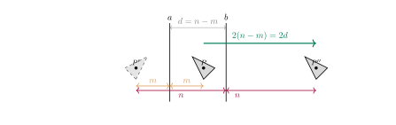
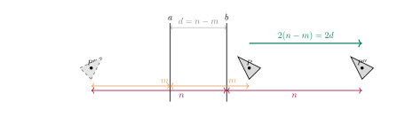

Aufgabe 4.2
Betrachten Sie auch die beiden anderen Fälle zu $\sigma_b\circ\sigma_a$ mit parallelen Achsen $a$ und $b$, d. h. mit dem Originaldreieck $DEF$ zwischen $a$ und $b$ bzw. rechts von $b$. Aus welchen Teilstrecken setzt sich die Verschiebungsstrecke zusammen?
Womit anfangen? Verfolgen Sie einen einzigen Punkt durch beide Spiegelungen, nicht das ganze Dreieck.
- Um wie viel verschiebt eine Spiegelung einen Punkt, der den Abstand $m$ zur Achse hat?
- Wie hängen die beiden Abstände mit dem Achsenabstand $d$ zusammen?
- Ändert sich daran etwas, wenn der Punkt woanders liegt?
Gegeben: zwei parallele Achsen $a$ und $b$ im Abstand $d$.
Fall 1: Original links von $a$
Da $m + n = d$ (Punkt liegt links von $a$), ergibt sich für die Verschiebung $2m+ 2n= 2(m + n) = 2d$
Fall 2: Original zwischen $a$ und $b$

Da $d=n-m$ (Punkt liegt zwischen $a$ und $b$), ergibt sich für die Verschiebung: $2n-2m=2(n -m) = 2d$
Fall 3: Original rechts von $b$

Da $d=n-m$ (Punkt liegt rechts von $b$), ergibt sich für die Verschiebung: $2n-2m=2(n -m) = 2d$
Die Regel
Die Verkettung $\sigma_b \circ \sigma_a$ zweier Spiegelungen an parallelen Achsen ergibt immer eine Verschiebung:
- Richtung: Senkrecht zu den Achsen, von $a$ nach $b$
- Betrag: $2d$ (doppelter Achsenabstand)
- Unabhängig von der Lage des Originalobjekts — das ist der eigentliche Gehalt der drei Fälle
Im Video: Etappe 4 · Fallunterscheidungen bei 4:41